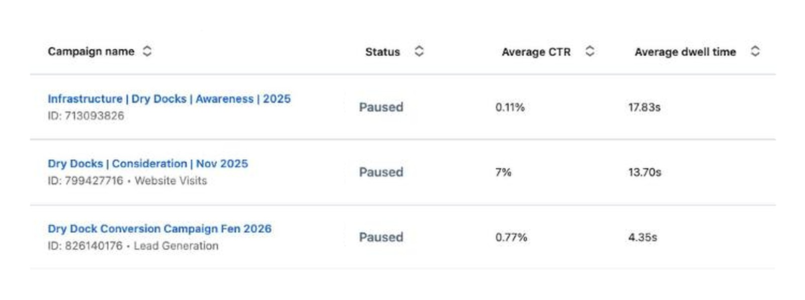
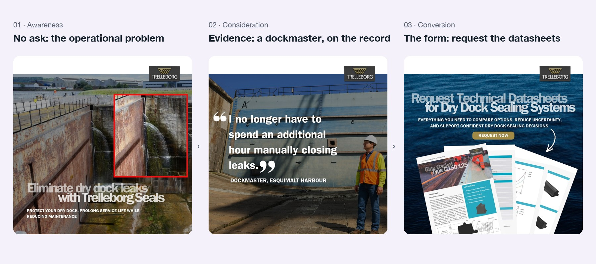

Two years of full-funnel paid social on LinkedIn
Eight campaigns across four product lines, run as a funnel: budget allocated by stage, each stage retargeting the last, and lead definitions agreed with sales before launch.
Engineered marine equipment is a considered purchase. Several people are involved and a decision takes months, so a single post or ad is one step in a much longer conversation.
Paid social was already building awareness with the right engineers and operators. The opportunity was to connect that awareness to what comes next: retargeting the people who engaged, and passing qualified interest to sales in a form they could act on.
Split the budget across the funnel, not across the products
The approach was to run a purchase this considered as a sequence. The audience needs several exposures before a demo request is a reasonable thing to ask for, and each stage tells you whether the next one is worth funding. Awareness stops being the whole strategy and becomes the part that builds an audience for something else to convert.
In practice that means three things. Budget is allocated by funnel stage rather than split evenly across product lines. Each stage retargets the audience the previous stage built. And the lead definition is agreed with sales before launch, so everyone reports on the same thing.
One infrastructure line, three campaigns, sixteen months
The clearest example is a dry dock product line. Awareness ran first and wide. A tightly retargeted consideration campaign followed against the audience that had engaged with it. Lead generation ran last, pointed only at people who had come through both.

The three campaigns in Campaign Manager
The account view showing the awareness, consideration and conversion campaigns as separate line items. This is the proof that the funnel was actually built as a sequence rather than described as one afterwards.
Crop out or blur the spend and budget columns before you screenshot. You took those figures off the site deliberately, so they should not reappear in an image.
Save as images/04-funnel-campaign-manager.jpg · 1600×900 · PNG
The result that mattered was the middle stage. Retargeting only the people who had engaged, the consideration campaign clicked through at about fourteen times the rate of comparable campaigns on the same objective without retargeting. The lead stage then came in comfortably inside the cost per lead that a single deployment on this line could justify.
What each stage actually showed
The sequence only works if the three stages ask for different things. The first asks for nothing at all.

The three stages side by side
Awareness, consideration and conversion creative in one image, in order, so a reader can see the ask escalating: operational problem first, evidence second, demo request last.
Compose the three units into a single landscape image, left to right, with a small label above each. If you would rather not composite them, three separate files also work; tell me and I will split the slot.
Save as images/05-funnel-creative.jpg · 1800×800 · JPG
What the same structure produced on other lines
- A navigation and piloting campaign built around an operational problem rather than the product ran at an 11.0% engagement rate, the highest on the account, and produced leads directly.
- A webinar programme for a mooring product was built around customer testimonial video from the ports already running the system.
- A regional awareness campaign for Latin America, in English and Spanish, ran at the lowest cost per thousand on the account.
Lead counts are LinkedIn form completions. Qualification against the agreed definition was done by sales. Budget figures available on request.
What it changed
The useful outcome wasn't any single lead number. It was having campaigns with a stated hypothesis, an agreed success measure and results that could be discussed. Each new paid proposal now builds on an agreed structure and agreed measures.
03 An AI system for planning and producing content →
A monthly intelligence brief that decides what to make, and the system that makes it.